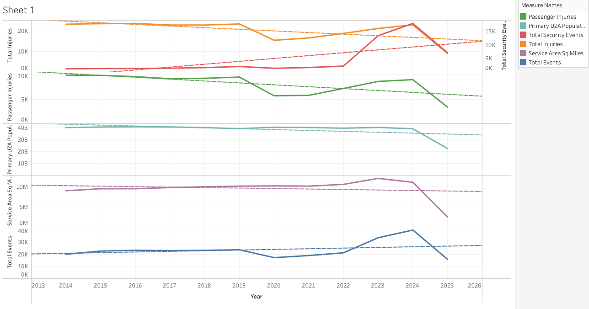

For this assignment I chose the data columns of Passenger Injuries, Primary UZA Population, Total Security Events, Total Injuries, and Year. These fields in the data were chosen for the interest of discovering if there are any trends present between population and Injuries/events. To do this I generated 5-line graphs with Injuries/Events on the y axis and year on the x axis. The line charts i generated all present the sum of the value per year to present the trend. All of these graphs showed there was a relationship between population and injuries over the years. Another interesting note is that between 2022 and 2023 there was a major spike in injuries that occurred followed by a steep decline in 2024. Below the initial trend.
